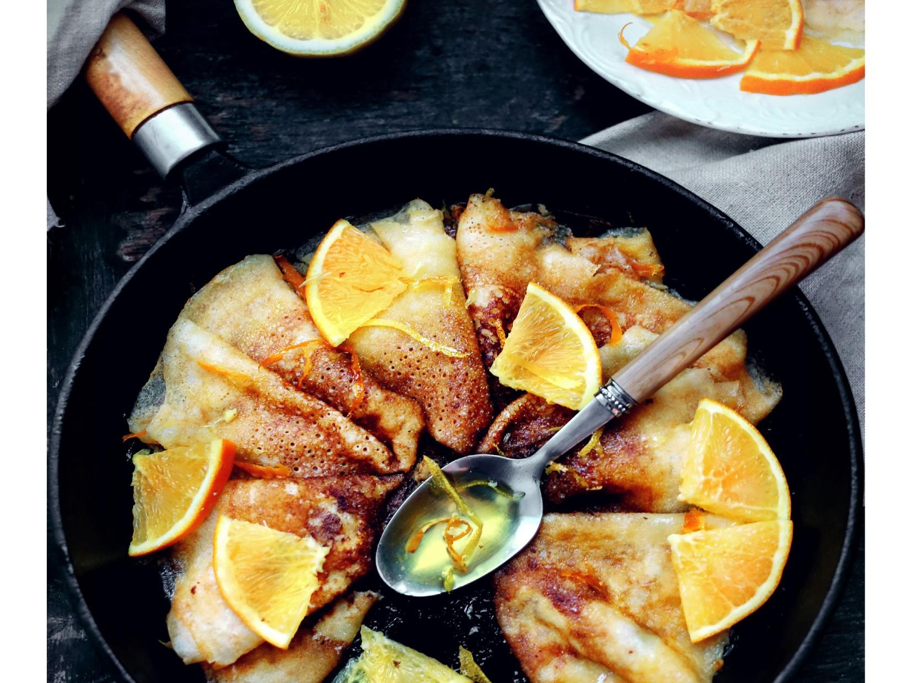

По сути креп-сюзетт – это тонкие блинчики в апельсиновом соусе. В идеале политые куантро и фламбированные. Советую вам набраться смелости и попробовать технику фламбирования, это не так сложно и страшно, как кажется. Но, разумеется, поливать блинчики алкоголем не обязательно, особенно если вы готовите для детей. А блинчики для креп-сюзетт мы предлагаем приготовить по рецепту знаменитого кондитера Пьера Эрме.
Эти блинчики очень тонкие, мягкие и ароматные. Алкоголь в тесте не дает развиваться клейковине, и блинчики после остывания не становятся резиновыми. Поскольку в этом случае в роме нам важно скорее наличие спирта, а не специфический ромовый вкус, можно заменить его на коньяк или другой крепкий напиток – главное, чтобы его вкус вас устраивал. К таким блинчикам подойдет и сладкая начинка, и несладкая.